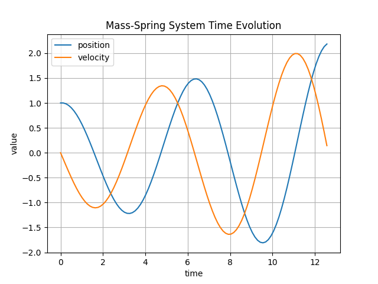
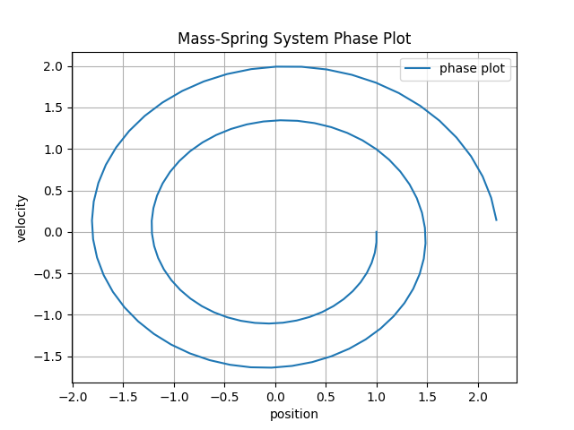

17.2. Implementing the explicit Euler method#
We want to implement a time-stepping method for solving the autonomous ODE
using the explicit Euler method:
with \(\tau = T/n\).
Time-stepping methods are implemented in the file timestepper.hpp.
The base class looks like
class TimeStepper
{
protected:
std::shared_ptr<NonlinearFunction> m_rhs;
public:
TimeStepper(std::shared_ptr<NonlinearFunction> rhs) : m_rhs(rhs) {}
virtual ~TimeStepper() = default;
virtual void doStep(double tau, VectorView<double> y) = 0;
};
It has the right-hand side of the ode as a member (m_rhs), and introduces a virtual function doStep which
evolves the state vector y by the time-step tau. It is a pure virtual function, since the base class has no
glue how to compute the time-step.
The explicit Euler method is a derived class from TimeStepper:
class ExplicitEuler : public TimeStepper
{
Vector<> m_vecf;
public:
ExplicitEuler(std::shared_ptr<NonlinearFunction> rhs)
: TimeStepper(rhs), m_vecf(rhs->dimF()) {}
void doStep(double tau, VectorView<double> y) override
{
this->m_rhs->evaluate(y, m_vecf);
y += tau * m_vecf;
}
};
It implements the update of the state vector by adding \(\tau f(y_n)\) to the vector. It requires one help vector for evaluating \(f\). To avoid reallocation of the vector in every time-step we made it a private class member.
17.2.1. Using the time-stepping method#
A mass attached to a spring is described by the ODE
where \(m\) is mass, \(k\) is the stiffness of the spring, and \(y(t)\) is the displacement of the mass. The equation comes from Newton’s law
force = mass \(\times\) acceleration
We replace the second-order equation with a first order system:
Then we define the right-hand-side as a NonlinearFunction. The derivative is needed for the Newton solver:
class MassSpring : public NonlinearFunction
{
double m_mass;
double m_stiffness;
public:
MassSpring (double m, double k)
: m_mass(m), m_stiffness(k) {}
size_t dimX() const override { return 2; }
size_t dimF() const override { return 2; }
void evaluate (VectorView<double> x, VectorView<double> f) const override
{
f(0) = x(1);
f(1) = -m_stiffness/m_mass * x(0);
}
void evaluateDeriv (VectorView<double> x, MatrixView<double> df) const override
{
df = 0.0;
df(0,1) = 1;
df(1,0) = -m_stiffness/m_mass;
}
};
We can now use the TimerStepper for soling the ode. We create a NonlinearFunction object as
MassSpring object, and pass it to the ExplicitEuler timer-stepper. Then we can run a simple time-loop to evolve the state by time-steps \(\tau\):
double tend = 4*M_PI;
int steps = 100;
double tau = tend/steps;
Vector<> y = { 1, 0 }; // initializer list
shared_ptr<NonlinearFunction> rhs = std::make_shared<MassSpring>(1, 1);
ExplicitEuler stepper(rhs);
std::cout << 0.0 << " " << y(0) << " " << y(1) << std::endl;
for (int i = 0; i < steps; i++)
{
stepper.doStep(tau, y);
std::cout << (i+1) * tau << " " << y(0) << " " << y(1) << std::endl;
}
This example is provided in demos/test_ode.cpp.
Using matplotlib from the a python script plotmassspring.py we generated the
plots of the time evolution
{kind=link}

and the phase plot via plotting (position(t), velocity(t)) as a two dimensional curve:
{kind=link}

17.2.2. Exercise:#
build and run the explicit Euler method for the mass-spring system. Try with different time-steps and much larger end-times. Look at the time evolution and phase plots.
Implement a
ImprovedEulertime-stepping method defined as:\[\begin{eqnarray*} \tilde y & = & y_n + \tfrac{\tau}{2} f(y_n) \\ y_{n+1} & = & y_n + \tau f(\tilde y) \end{eqnarray*}\]Compare the obtained results with the explicit Euler method.
Push your extensions to your github fork.